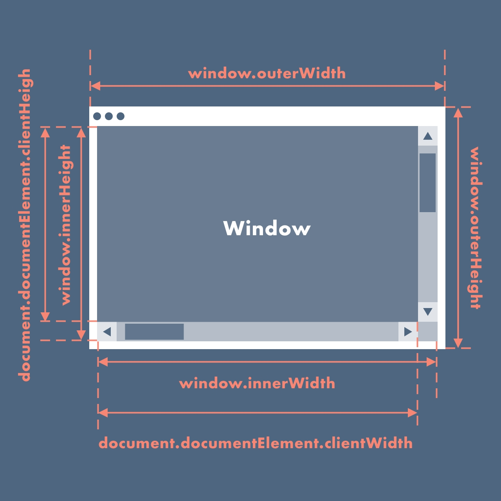
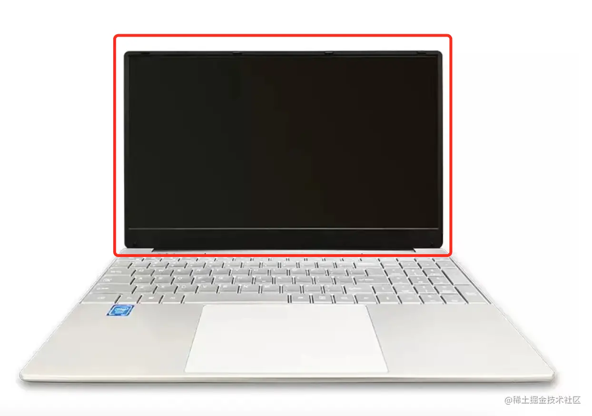
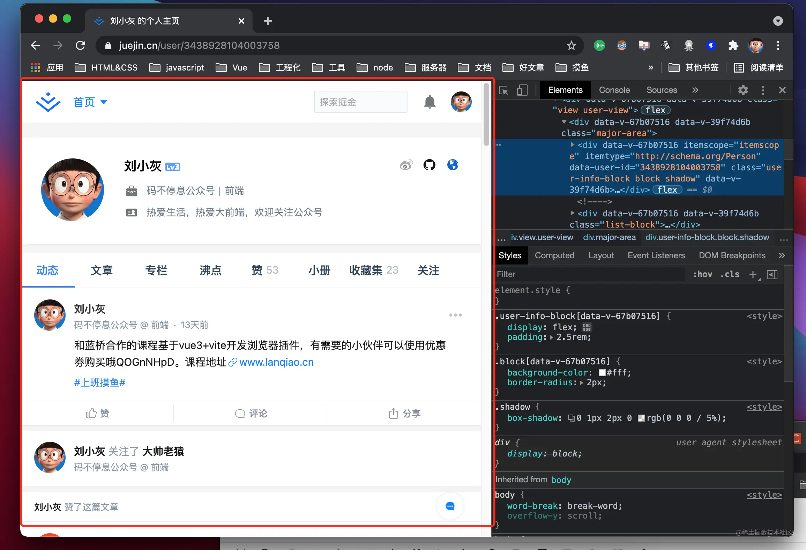
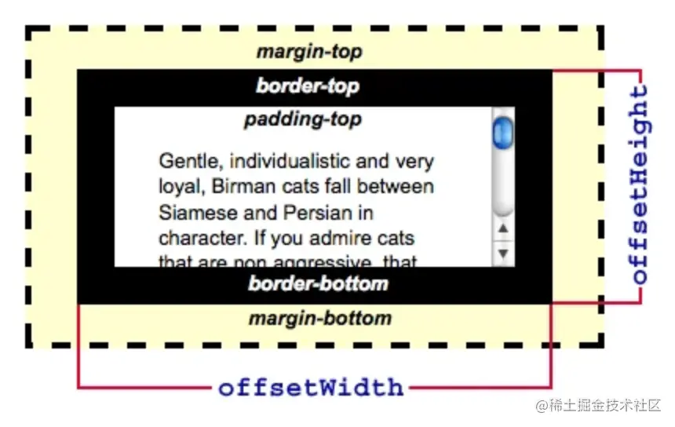
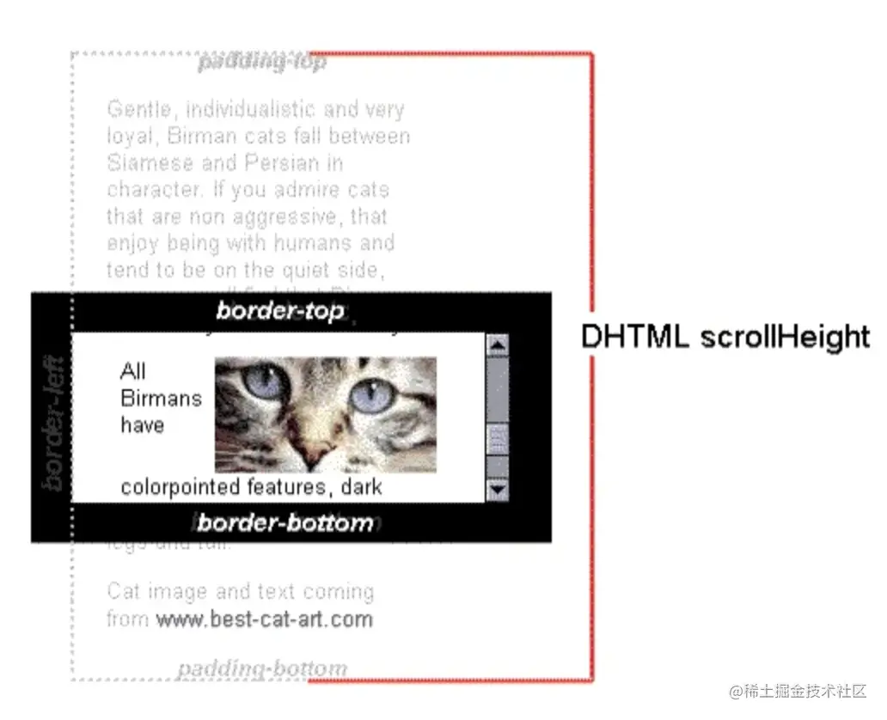
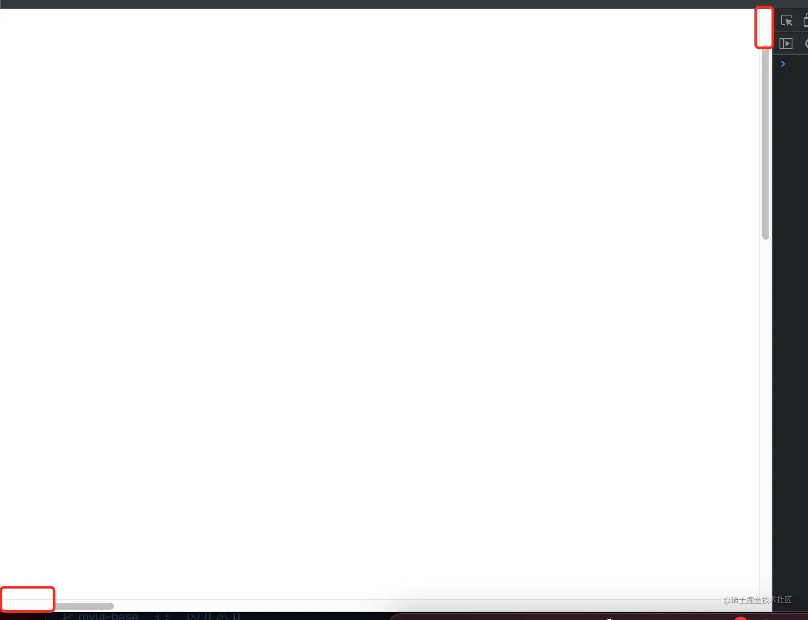
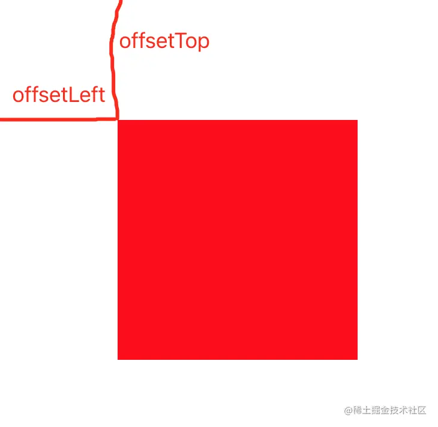

奇怪的 DOM API
Node & Element
两者关系: Element 是 Node 的子类
区分方法: 一个简易的区分 Node 和 Element 的方法是: 所有按照标签语法书写的元素都是 Element. 依照这个规则,
以下节点都是不是 Element 而是 Node
Text Node:
"I am a text node"CData Section Node:
<![CDATA[ < > & ]]>Processing Instruction Node:
<?xml-stylesheet type="text/css" href="rule.css"?>Comment Node:
<!-- I am comment-->Document Type Node:
<!doctype html>Document Fragment Node:
#documentAttribute Node:
class="dmeo"
以下节点是 Element
- Element Node
- Document Node
可以采用
node instanceof Node,node instanceof Element判断节点类型也可以采用 nodeType 判断
property 区别
childNodes&children后者只能获取子
Element不能获取非 Element 的 Node. 前者返回的是NodeList后者返回的是HTMLCollection.HTMLCollection没有任何数组方法, 例如map(),find(),forEach()等等. 但是NodeList确实有forEach()方法. 这是它唯一拥有的数组方法.HTMLCollection总是实时更新.firstChild&lastChild返回的NodeListgetElement*返回的是HTMLCollectionquery*返回的是NodeListtagName&nodeNamenodeName为Node的方法,tagName为Element的方法nodeName结果全大写,tagName全小写innerText&textContent:innerText是Element的方法,textContent是Node的方法setAttribute是一个Element方法CSS 选择器只能选中 Element./img
innerText & textContent
innerText是Element的方法,textContent是Node的方法textContent会把所有子元素的文本连接起来并返回, 但是innerText会返回一个"人类可见&可读"的文本, 它不会返回不可见元素的文本(例如<style>、<script>、<span style="display:none">). 就好像你用鼠标选中这段文本后再 Ctrl+C 得到的文本.- 也正因为上面这一点, 所以在读取(或修改)一个元素的
innerText属性时会为了计算 CSS 而造成一次重绘(reflow), 所以它的性能比textContent低.
样式与属性
增加样式:
Ele.style.width = xxx增加 class
Ele.className='aaa' // 设置元素的class为aaa ，如果元素上原本有class则会覆盖 Ele.classList.add("aaa") // 给Ele新增aaa Ele.className += " aaa" // 给Ele新增aaa包含 class
Ele.classList.contains("aaa")增加属性
Ele.setAttribute("data-id", 1);删除属性
Ele.removeAttribute("data-id");获取属性值
Ele.getAttribute("data-id");
以下内容来自: https://juejin.cn/post/6966062224892756005
尺寸相关
尺寸示意图
 获取实际屏幕宽高
 const W = window.screen.width const H = window.screen.height获取浏览器宽高
const W = window.outerWidth; const H = window.outerHeight;获取当前窗口宽高（浏览器视口宽高）
 const W = window.innerWidth; const H = window.innerHeight;获取元素布局宽高
 const W = element.offsetWidth; const H = element.offsetHeight;获取元素内容宽高
 const W = element.scrollWidth; const H = element.scrollHeight;获取滚动后被隐藏页面的宽高
 const H = document.documentElement.scrollTop; const W = document.documentElement.scrollLeft获取元素距离顶部和左边距离
 const top = Ele.offsetTop; const left = Ele.offsetLeft
事件相关
鼠标事件
单击事件
Ele.onclick = function () { console.log("onclick"); };双击事件
Ele.ondblclick = function () { console.log("ondblclick"); };右击事件
Ele.oncontextmenu = function () { console.log("oncontextmenu"); };鼠标按下事件
Ele.onmousedown = function () { console.log("onmousedown"); };鼠标移动事件
Ele.onmousemove = function () { console.log("onmousemove"); };鼠标抬起事件
Ele.onmouseup = function () { console.log("onmouseup"); };鼠标进来事件
// 鼠标移动到自身时候会触发事件，同时移动到其子元素身上也会触发事件 Ele.onmouseover = function () { console.log("onmouseover"); }; // 鼠标移动到自身是会触发事件，但是移动到其子元素身上不会触发事件 Ele.onmouseenter = function () { console.log("onmouseenter"); };鼠标离开事件
// 鼠标移动到自身时候会触发事件，同时移动到其子元素身上也会触发事件 Ele.onmouseout = function () { console.log("onmouseout"); }; // 鼠标移动到自身是会触发事件，但是移动到其子元素身上不会触发事件 Ele.onmouseleave = function () { console.log("onmouseleave"); };
键盘事件
keydown：当用户按下键盘上的任意键时触发，而且如果按住按住不放的话，会重复触发此事件。keypress：当用户按下键盘上的字符键时触发（就是说用户按了一个能在屏幕上输出字符的按键keypress事件才会触发），而且如果按住不放的，会重复触发此事件（按下Esc键也会触发这个事件）。keyup：当用户释放键盘上的键时触发。
表单事件
submit：表单提交reset：表单重置change：值发生改变blur：离焦（不会冒泡）focus：聚焦（不会冒泡）
window
window 事件指的是浏览器窗口本身而不是窗口内的文档对象。
onload：当文档和资源加载完成后调用unload：当用户离开当前文档转而其他文档时调用resize：浏览器窗口改变
其他事件
beforeunload：关闭浏览器窗口之前触发的事件DOMContentLoaded：文档对象加载完成之后就触发的事件，无需等待样式、图片等资源readystatechange：document有 readyState 属性来描述 document 的 loading状态，readyState 的改变会触发 readystatechange 事件document.readyState === 'complete'页面已加载完毕document.readyState === 'loading'页面正在加载
pageShow和pagehide：每次用户浏览关闭页面时触发